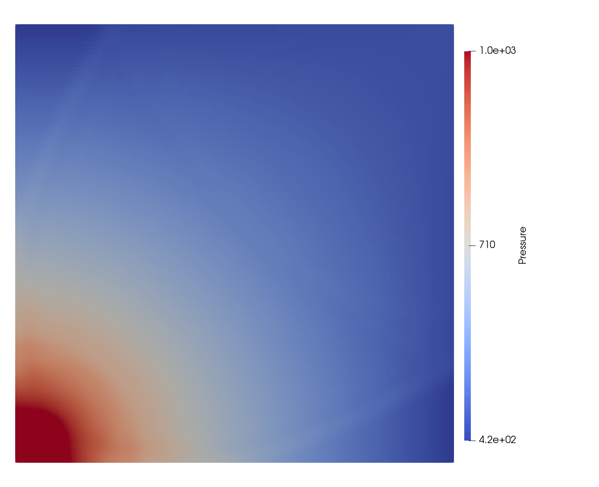

|
MFC
High-fidelity multiphase flow simulation
|
|
MFC
High-fidelity multiphase flow simulation
|
Reference: V. A. Titarev, E. F. Toro, Finite-volume WENO schemes for three-dimensional conservation laws, Journal of Computational Physics 201 (1) (2004) 238–260.
Reference: C. W. Shu, S. Osher, Efficient implementation of essentially non-oscillatory shock-capturing schemes, Journal of Computational Physics 77 (2) (1988) 439–471. doi:10.1016/0021-9991(88)90177-5.

Reference: P. D. Lax, Weak solutions of nonlinear hyperbolic equations and their numerical computation, Communications on pure and applied mathematics 7 (1) (1954) 159–193.
The 3D_weak_scaling case depends on two parameters:
mfc.sh run.mfc.sh run.Weak scaling benchmarks can be produced by keeping gbpp constant and varying procs.
For example, to run a weak scaling test that uses ~4GB of GPU memory per rank on 8 2-rank nodes with case optimization, one could: